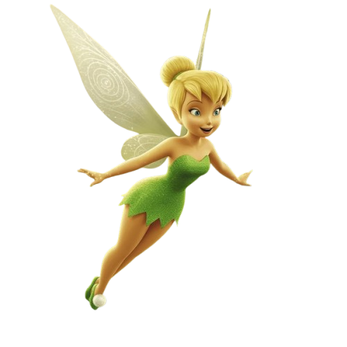
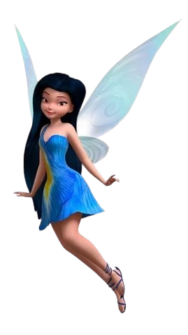
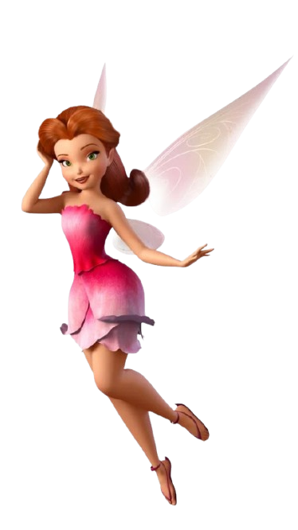
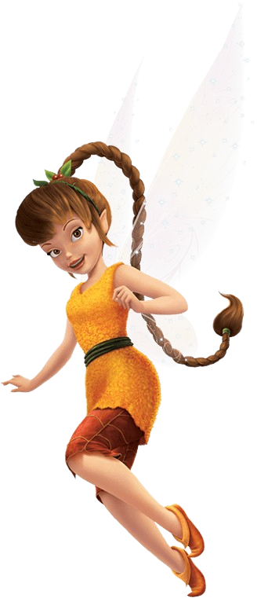
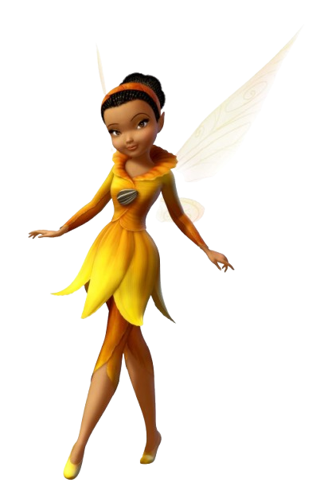
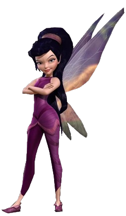
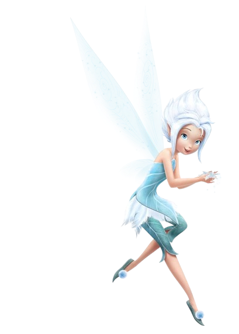
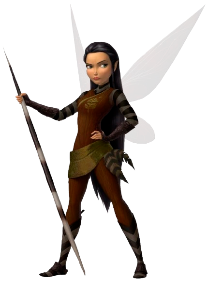
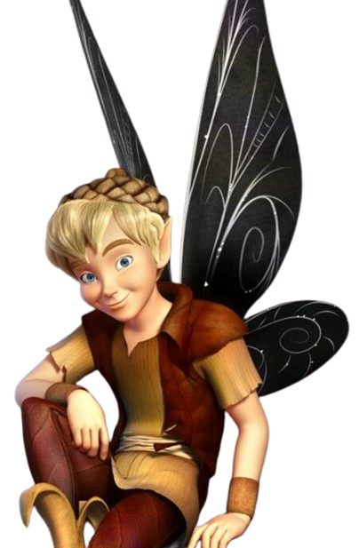

Especialista em criar invenções e consertar objetos.
Travessa, leal e temperamental

Fada talentosa da água conhecida por controlar a água, riachos e criar orvalhos.
Calma, simpática e gentil

Cuida das flores e da vegetação.
Sofisticada, adora moda e beleza, detesta sujeira.

Ama animais e protege todas as criaturas da floresta.
Travessa, alegre e brincalhona.

Responsável por espalhar luz e brilho, manipular e criar dobras de luz.
Ansiosa, racional, perfeccionista e cautelosa.

A fada voo em supervelocidade, capaz de criar redemoinhos e furacões.
Sarcástica, competitiva e leal.
Especialista em magia do pó mágico, sendo uma fada alquimista, capaz de criar diferentes tipos de pó mágico.
Inteligente, espirituosa e ambiciosa.

Fada do inverno com poderes de gelo, capaz de congelar coisas.
Curiosa e adora aventuras.

Líder das fadas escoteiras,focada no reconhecimento, segurança e proteção.
Protetora, corajosa e dedicada.

Guardião do pó mágico, coleta e distribui o pó mágico para as outras fadas no Refúgio das fadas.
Bondoso e prestativo.